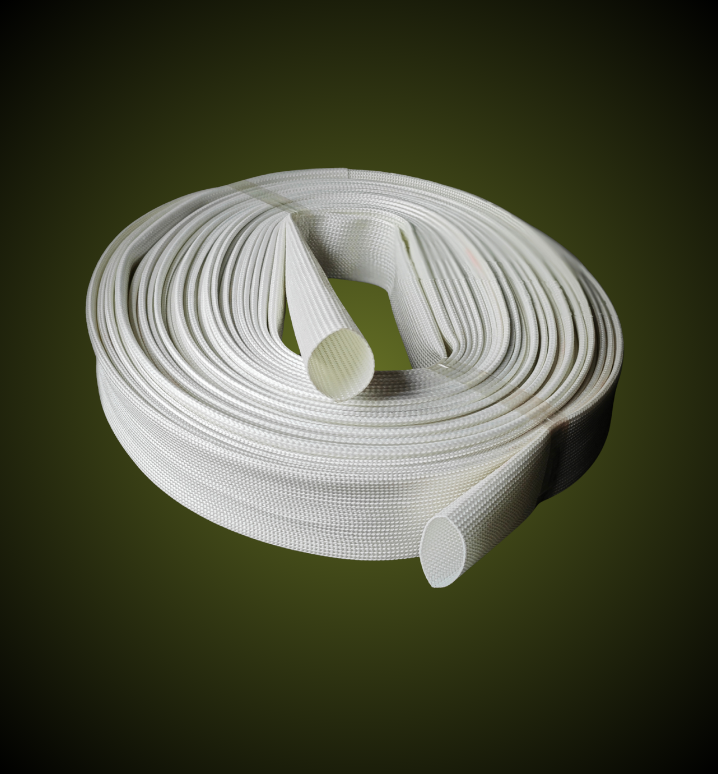

硅树脂玻璃纤维套管
Fiberglass Silicone Sleeve
硅树脂玻璃纤维套管由无碱玻璃纤维编织管涂覆硅树脂制成，具有优异的耐热性、绝缘性和柔韧性。广泛应用于电机、变压器、电器、电子产品等的绝缘保护。
产品规格
| 产品类型 | 耐压等级 | 温度范围 | 特点 |
|---|---|---|---|
| 内胶外纤玻纤管 | 7KV | -60°C ~ +200°C | 柔韧性好，绝缘性能优异 |
| 内纤外胶玻纤管 | 1.5KV - 10KV | -60°C ~ +200°C | 耐磨，耐高压 |
| 硅树脂玻纤管 | 1.5KV | -60°C ~ +200°C | 经济实用，通用型 |
应用领域

广泛应用于：厨房电器、工业机器人、LED照明、电机维护等领域
- 电机绕组绝缘
- 变压器绝缘
- 电器线路保护
- 电子产品绝缘
- 汽车线束保护